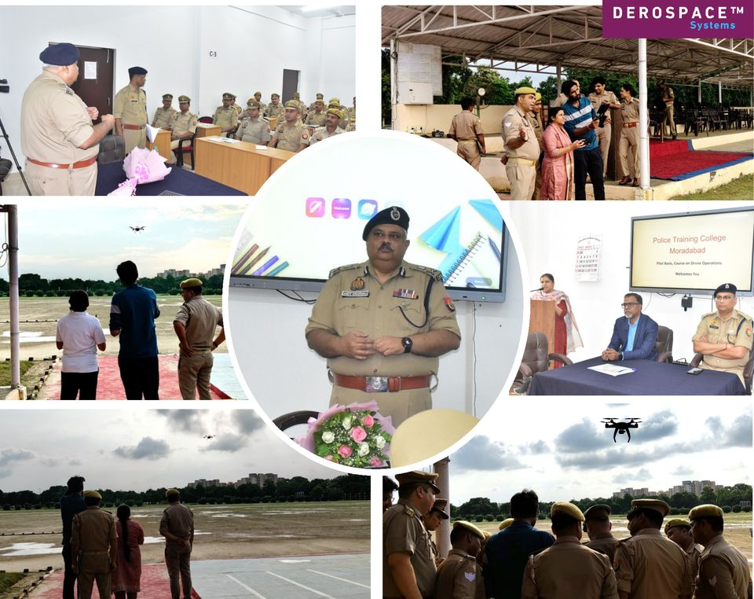

Fragmented fleets
Each vendor brings its own closed ground station and data link.
No single operating picture
Mission systems for the UAV era — built in India, for the world
Mission infrastructure, deployable UAV systems and operator training for evolving UAV operational needs.
UAV operations are scaling: more aircraft, and less time to respond.
Derospace enables authorities to govern, oversee and audit UAV operations across organisations and locations; empowers operators to plan, command and execute missions across platforms through one unified ecosystem; delivers rapid-deployment UAV capability when time matters; and prepares mission-ready operators and teams.
Mission Infrastructure Patent pending
Unified mission infrastructure for vendor-agnostic, multi-OEM, multi-mission, multi-location operations.
Govern · Plan · Command · Execute · Oversee · Audit
Explore DeroMiC → 02Mission Air Systems Patent pending
Rapid-mobility and deployment UAV systems for critical time windows.
Carry · Deploy · Fly · See · Act
Explore dXcale → 03Dronocation DGCA-authorised
Remote-pilot training, certification and operational readiness through our DGCA-authorised RPTO, plus institutional programmes.
Train · Certify · Operate
Explore Dronocation →How they fit. Our training prepares the people. Our drones put aircraft in the air fast. Our mission infrastructure governs, plans and oversees missions across teams and locations, and keeps the record. Each works on its own. Together, they take an operation from readiness to mission assurance.
Mission Infrastructure
Many aircraft, many OEMs, many locations: one coordinated operation. Govern every mission. Coordinate every operation.
DeroMiC · Indian Patent Application 202541104086 A
DeroMiC provides a unified operational framework for governing, planning, executing and overseeing UAV missions across multiple OEMs, organisations and locations, from the rules that govern a mission to the evidence it leaves behind. Not another ground station: the system that connects them all.

Four organisations, each flying UAVs from several OEMs at different locations. Toggle the view.
More missions, more applications, more OEM platforms and more locations multiply the work of keeping every aircraft and team in step.
Each vendor brings its own closed ground station and data link.
No single operating picture
Multi-UAV, multi-mission tasking done by hand across consoles.
Slow response and airspace conflict
Field teams depend on central links that degrade or drop.
Missions stall at the edge
Weak authority oversight, audit trails and role control.
Compliance and accountability risk
Bulky cases and lengthy setup.
Delayed deployment when time matters
A different controller and interface for every OEM.
More training and more switching errors
The next challenge is not drone performance. It is coordinating many drones at scale.
DeroMiC is not another ground station, fleet dashboard or UTM tool. It is the infrastructure underneath them.
The authority sets rules, permissions and constraints.
Organisations assign missions, teams, UAVs and areas.
Missions run in the field within those rules.
Mission evidence flows back for live view, replay and audit.
Demonstrations open for requests from government, PSU, defence and critical-infrastructure operators.
See DeroMiC run a multi-OEM mission →Mission Air Systems
Rapid-mobility & deployment UAV systems for critical time windows. When minutes decide the outcome.
The first minutes after an incident are the most valuable, in defence and civil operations alike. Aerial eyes that arrive in the Golden Minutes change the outcome; aerial eyes that arrive later mostly record it.
Illustrative concept chart, not measured data.
dXcale · Patent pending, published application
A complete UAV system in one field backpack that one operator carries, airborne while the moment still matters.


Drag: bulky hard cases and a two-person carry, versus one backpack.
Figures are published from measured tests only. All values to be confirmed.
Put dXcale in your team’s hands.
Request a field trial →Dronocation by Derospace Systems
Remote-pilot training and certification through our DGCA-authorised RPTO, plus institutional training and operational-readiness programmes for agencies and organisations.
Beyond certification. Building mission-ready UAV operators and teams.

Classroom, simulator, practical flying
DGCA-approved syllabus & certification support
Mission drills & readiness assessment
No one can learn and remember everything in a short course. That is why every participant gets 12 months’ access to our digital learning platform, built specifically for drone education. Lessons, videos, regulations and practice material stay available after the classroom ends, so participants can revisit any topic, anytime, from anywhere.
DGCA-authorised training to earn your Remote Pilot Certificate.
Custom programmes for police, armed forces, utilities, PSUs and enterprises.
From certified pilots to mission-ready teams.
One mission infrastructure. Configured for diverse operational environments. DeroMiC provides a common foundation for governance, mission planning, command, execution, oversight and audit across organisations, OEM platforms and locations.
For armed forces, paramilitary, border and homeland security units.
Configured for defence command structures, operational security requirements, sovereign deployments and distributed field operations.
For police, disaster management, utilities and public-sector undertakings.
Configured for departmental governance, jurisdiction-based operations, multi-agency coordination and institutional accountability.
For infrastructure, energy, mining and drone-service operators.
Configured for enterprise organisational structures, multi-site operations, commercial workflows and scalable UAV deployments.
About Derospace
Derospace Systems is an Indian deep-tech company building the infrastructure that lets many drones, from many makers, operate as one coordinated system. We design our own software, edge hardware and aircraft, on Indian-owned IP, designed and developed in India.
Drones have proven themselves. The harder problem now is coordinating them at scale: across OEMs, organisations and locations, under rules someone can audit.
Speed is the second problem. Most capable drones still travel in bulky cases that need two people and lengthy setup, so they arrive after the moment that mattered. Capability has to move with the operator and be airborne within the Golden Minutes.
And none of it works without people who are trained, certified and ready for real conditions, not just for a test.
These are the problems we exist to solve.
To give every authority and operator one coordinated, accountable way to run UAV missions, with the aircraft and trained people to act fast.
A sovereign drone-operations ecosystem in which every UAV, from any maker, works as part of one coordinated mission.
Founders with decades across UAVs, aerospace, geospatial systems and defence-sector programmes.
Founder & CEO, Product & Core Architecture
Engineer, entrepreneur and IIM Lucknow executive alumnus. Holds a granted Indian patent, with over a decade in the UAV industry; fostered an early DGCA-approved drone manufacturing startup in India.
Co-Founder, Business Operations
Engineer and tech entrepreneur with 25+ years in GIS, network-centric computing, image analysis and urban mapping, and over a decade of UAV industry exposure.
Co-Founder, Business Development & Strategic Sales
Engineer with 25+ years of global leadership across Quest Global, TAS, Axiscades-Airbus and EDS Technologies.
Co-Founder, Systems Engineering & Technology Validation
Hands-on UAV technologist across flight hardware, embedded systems, communications, integration and testing.
Milestones, awards and recognition, intellectual property, media coverage and events from Derospace Systems.
Talk to us
We offer no-cost, no-commitment field trials to selected government, PSU and critical-infrastructure operators. Tell us about your operation and we’ll suggest a demonstration, a field trial or a training programme.